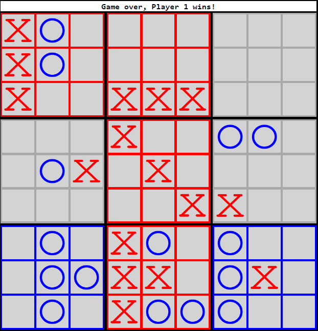

Instructions
Overview
The mechanics of this game are similar to the original Tic-Tac-Toe. Players take turns placing "X's" or "O's" (pieces) on the board with the objective of placing three of those pieces in a consecutive line, either horizontally, vertically, or diagonally.
The board contains 9 Tic-Tac-Toe boards inside a grid which forms a larger Tic-Tac-Toe board (as seen below).
Placing pieces
The first move of the game can be on any square. Every other move is dictated by where the player's opponent placed their piece.
A player must play in the quadrant that corresponds to the square in which their opponent played on their last move (as seen below).
Winning quadrants
Once a player has successfully won (gotten three-in-a-row) in a quadrant, the quadrant is no longer valid to be played in.
Hung boards
It is possible that a quadrant "navigated to" has no available squares to play in or has already been won. Such a case is called a "hung board". In such a case, the next player can play in any square in any valid quadrant.
How to win
The ultimate objective of the game is to win three of the Tic-Tac-Toe games; the games won forming a horizontal, vertical, or diagonal line within the larger board context (as seen in the image below).
